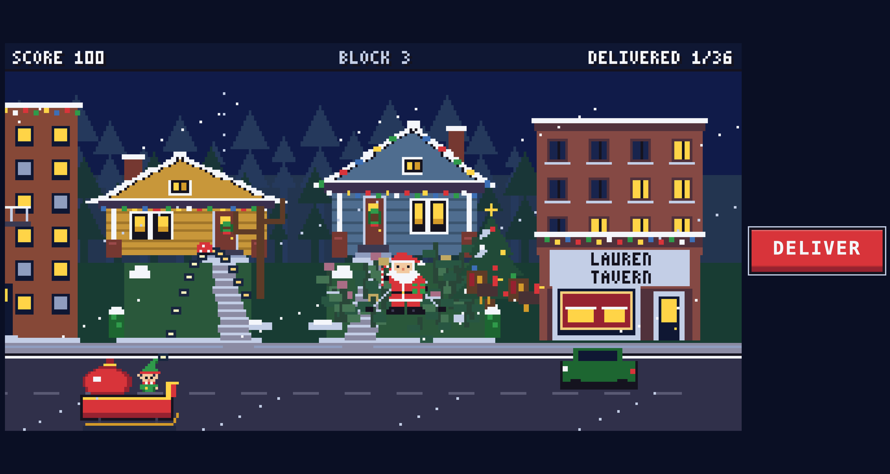
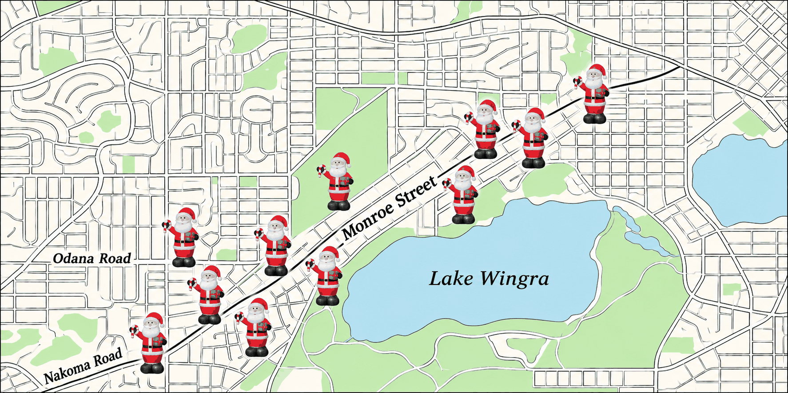
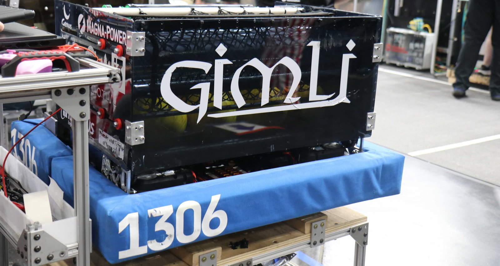
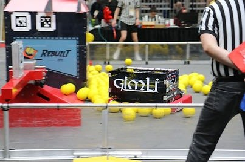
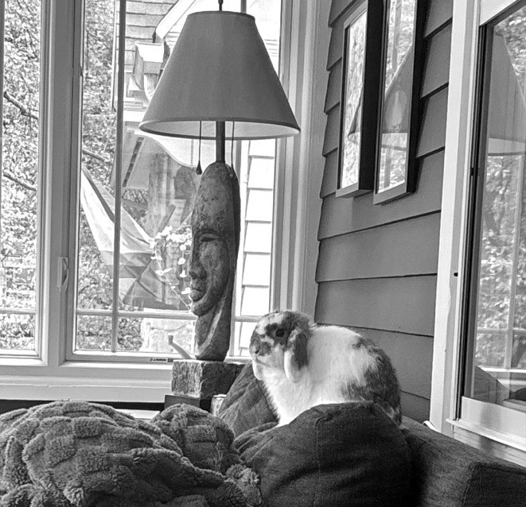

New video game puts the neighborhood's inflatable Santa supply in your hands.

Elf takes in the sights and serves up the joy, one Santa at a time.
The Tattler is proud to introduce Santas on Monroe Street, a new video game for players of all skill levels. Deliver inflatable Santas around the neighborhood, navigate local happenings, and rack up points as you chase the high score.
The Tattler invites the neighborhood to take part in the official count of inflatable Santas.

An accurate count is essential to ensuring fair representation across the neighborhood. Blocks that fail to count their Santas risk losing their fair share of seasonal attention.
Inside the student-led team competing on the world stage.

There are teenagers in our neighborhood spending their time designing machines in CAD, cutting metal, wiring electronics, programming control systems and repairing broken mechanisms under pressure.
Then they send the finished robot out to compete.
Last season, BadgerBOTS Team 1306 made it all the way to the World Championship.
Asked to describe the kind of people who voluntarily devote this much time to competitive robotics, the team offered this:
“Dedicated and nerdy.”
Every year, FIRST Robotics releases a brand-new game, and teams around the world have to figure out how to build a robot capable of playing it.
That means the students cannot simply dust off last year's machine. They have to start over.
They study the new challenge, decide what kind of robot might succeed, design it, build it, wire it, program it and figure out how to make the whole thing work reliably enough to compete.
BadgerBOTS divides that work among teams focused on build, design, electrical, programming, strategy, outreach and business.
And according to the students, newcomers do not need to arrive knowing how to do any of it.
“Only thing you need to know is how to use a computer,” one student explained. “We teach the rest.”
During the craziest parts of the season, students may spend about two hours a day at the team's facility, then another couple of hours working outside it.
“We basically live in metal shavings from our machines,” the team reported.
Meet Gimli
Their most recent robot.
Why? Because he is “short and stout.”
Gimli's job, in very simplified terms, is to collect balls using rotating rollers, move them through the robot on what the students describe as something like the rolling floor of an airport X-ray machine, then fire them rapidly from a shooter.
Making that happen reliably is considerably harder than that sentence suggests.
The intake system, which brings balls into the robot, became one of the biggest challenges of the season. The students redesigned it several times.
Then came the Wisconsin State Championship, where, according to the team, the intake broke roughly 10 times. “I'm not exaggerating,” one student added. It failed again during the second finals match, and at one point the team tried something that sounds almost offensively simple: they removed a bar from the intake. That fixed the problem, just in time for the playoffs.
This is apparently part of competitive robotics too: months of design and engineering, followed occasionally by the discovery that the correct solution is to take one piece off.
Then comes the moment when there is nothing left to adjust.
The repair is finished. The robot has to go back out.
Students described that moment as sending the machine onto the field and just hoping, in their words, it does not “break and kill itself.”
They are also very good at this
BadgerBOTS did not spend last season merely keeping Gimli alive.
They won.
At one competition in Appleton, the team went undefeated.
At another early event, they reached the finals while losing only one match.
Their season eventually took them to Houston for the World Championship, where hundreds of teams gathered to compete at one of the highest levels of student robotics.
Continued from page 3

Gimli and Team 1306 on the competition floor.
For people outside the robotics world, it can be difficult to understand just how competitive all of this becomes. Teams know which programs are strong, remember standout robots and performances, and adjust their own strategy as competitions unfold. And when things go badly, they remember that too.
At the Wisconsin State Championship, BadgerBOTS struggled through qualifying as robot failures piled up. But their earlier results had already shown what the team was capable of.
When the competition shifted into its championship rounds, top teams selected other teams to join them in alliances. The third-ranked team took a gamble on BadgerBOTS, and together they went on to make the finals.
That kind of performance requires more than building a clever machine. Students have to operate it under pressure, repair it quickly, understand what other teams are doing, communicate clearly and make decisions while the competition is still unfolding.
The team describes itself as student-led.
Asked what students actually make decisions about, the response was straightforward:
“Basically everything.”
Not just for robot people
It would be easy to assume a team like this is made entirely of teenagers who have been programming since preschool.
It is not.
Students learn on the team, and not everyone is there because they want to become an engineer. BadgerBOTS also has students working in outreach, business and community programs, including summer camps.
That balance came through when the team was asked to estimate how much of competitive robotics is actually engineering.
Their answer: about 45 percent.
Another 45 percent, they said, is outreach.
The remaining 10 percent is feeding teenagers.
The work also consumes a steady supply of 3D-printing filament, sheet metal and, according to the team, “our determination.”
More than a robot
By the end of the season, all of that work had carried BadgerBOTS from a workshop full of metal shavings to competition on the world stage.
And they are already looking ahead.
Their goal for this season is simple: get even better.
After seeing what they built last year, that seems worth paying attention to.
LEARN MORE: Find Team 1306 BadgerBOTS, their robots, competitions, summer programs and information about joining the team at teams.badgerbots.org/team1306.
A Tattler investigation reveals an existential threat to Monroe Street's most recognizable inflatables.
Every December, Monroe Street undergoes a remarkable transformation as identical inflatable Santas appear up and down the street, creating one of Madison's more subtle, yet well-known, holiday traditions.
Naturally, the Monroe Street Tattler felt obligated to find some untold angle on the story.
The endangered model, seen here in full inflation.
What began as a routine inquiry into the neighborhood's annual Santa population has uncovered a deeply troubling development.
The Santas appear to be no longer manufactured!
Gemmy Industries, the company responsible for producing the particular 12-foot inflatable Santa that has become synonymous with Monroe Street Christmas, appears to have discontinued the model.
The implications are considerable.
A seasonal resident stands tall behind a regulation-height railing.
Inflatable Santas are not immortal. They endure all the indignities of spending several weeks outdoors in Wisconsin. By the end of the season, some look a little worse for wear, and every now and then one springs a leak or meets some other unfortunate end. The neighborhood's Santa population is holding steady for now. The conditions remain appalling, and over time they could lead to a slow but irreversible collapse.
In an effort to avert a potential Christmas catastrophe, we have taken the extraordinary step of writing directly to Gemmy's chief executive officer Dan, urging the company to reconsider its decision to help preserve this beloved neighborhood tradition.
At press time, no response had been received.
We are now calling upon residents, readers, and anyone else who has found joy in this peculiar annual spectacle to make their voices heard.
If these Santas have brought a smile to your face, brightened your December commute, or simply reassured you that the neighborhood remains appropriately eccentric, we encourage you to write to Gemmy and explain why this Santa's continued existence matters.
The Santas are standing this year. But without intervention, the future of Monroe Street Christmas remains uncertain.
The Tattler will continue to monitor this developing situation.
Sauna opens amid growing demand for unpleasant temperatures
It started with a podcast. Then came the electrolytes, creatine, and a Whoop armband. Now your husband talks about “recovery” despite having done nothing particularly strenuous. He's tracking his sleep, monitoring his cortisol, and has developed strong opinions about inflammation.
Fortunately, Madison Saunas, a new sauna near Lake Wingra, has opened, providing a place for him to sit in extreme temperatures and discuss optimal recovery protocols with others who listened to the same podcast. Sessions can be booked online, allowing recovery to be scheduled well in advance of any actual exertion.
Whether this represents a welcome addition to neighborhood wellness or simply the latest stage of the male midlife crisis remains to be seen.
The sauna is clearly open to everyone, regardless of gender, podcast preferences, or perceived need for recovery.
The Tattler welcomes this new addition to the neighborhood and looks forward to experiencing its scientifically documented benefits for cardiovascular health, cellular recovery, and long-term longevity. Our Whoop has already been charged.
Up next: When will the neighborhood get its much needed cold plunge?
A note to Madison Saunas
Madison Saunas if you're reading this, we'd love to sell you an advertisement in the Tattler. In fact, we've already designed one for you, entirely without your knowledge or consent.
A Monkey Hunt adoptee settles into its new home. It's already sharing the best seat in the house with the family dog.
Page 7
The Monroe Street TattlerAround the Neighborhood
Around the Neighborhood
Newest member of neighborhood watch: Patrick Booping

Don't be alarmed if you're walking down Keyes Avenue and spot a furry face staring you down through a fogged window. It's just your neighborhood officer reporting for duty: Patrick Booping!
Let Patrick know if you'd like to lend a helping paw to his patrol team or have any suspicious activity you'd like him to investigate. He's committed to keeping the neighborhood safe and informed.
His motto: “Eliminate snooping with Officer Booping.”
Once-cherished Halloween decorations left to contemplate their final hours
Former Halloween favorites were discovered huddled together, their faces contorted in anguish as they await their inevitable fate. Neighbors appear unmoved.
Tattler Crossword No. 3, November 2026. No. 4 is on page 12.
W
I
L
D
O
H
M
O
B
S
E
V
E
N
H
O
P
S
A
N
D
R
E
A
D
E
P
A
S
A
L
I
E
N
S
A
C
E
R
L
T
R
L
N
S
N
D
T
E
I
B
O
S
M
O
R
E
C
E
S
A
R
E
T
A
P
Q
E
D
T
H
R
O
B
M
U
T
E
T
I
A
R
A
T
I
S
T
O
G
O
T
O
Page 8
The Monroe Street TattlerDear Barb
Dear Barb
Season's greetings. Mind your manners.
Dear Barb: Every year, our extended family gets together the weekend before Christmas so everyone can spend Christmas Day with their own families. It's a lovely tradition, except my mother insists on making a formal seating chart, even though nearly the same twelve people have attended for the past fifteen years. Last year, she separated my husband and me because she said we were “getting too comfortable.” Is this normal?
- Displaced
Dear Displaced: Your mother understands something most people don't: an extended family holiday gathering is not a celebration. It is a carefully managed diplomatic summit. Fifteen years of peace is no accident. There are reasons you aren't privy to.
Verdict: Respect the seating chart. Your husband may have been traded for concessions.
Dear Barb: We received a wedding gift from a good friend in a lovely Von Maur box. Although there was no gift receipt, I decided to try exchanging it at the Madison location. At the counter, however, the sales associate informed me that Von Maur doesn't even sell the item.
I was mortified.
Do I tell my friend or pretend it never happened?
- Sincerely, Boxed and Betrayed
Dear Boxed and Betrayed: A Von Maur box is not just a box. It is a promise of tasteful merchandise, attentive customer service, and the reasonable expectation that whatever is inside can be returned or exchanged.
Your friend has violated that sacred trust.
I cannot imagine the humiliation. I would now avoid that particular Von Maur for at least six months.
That said, I am troubled by your decision to return a wedding gift. In my day, we accepted unwanted gifts graciously and stored them in the basement until the giver died.
As for your friend, do not confront them. Maintain the friendship and never mention the incident.
There is no reason the friendship cannot continue. You simply know a little more about the person than you did before.
Verdict: Keep the friend. Put the gift in the basement. Give Von Maur six months.
▲ A shout-out to our neighbors at Tree House Arbor Science
Tree House Arbor Science helped put this December issue of the Tattler in your hands. They're also a great resource for those of us with old trees we'd like to keep around. And here's something we learned: they work even in the dead of winter. If your trees could use some care, give them a call today and tell 'em the Tattler sent you.
Page 9
The Monroe Street TattlerReader Potpourri
Reader Potpourri
An assortment of things our readers insisted we know.
Neighborhood hair salon defies traffic logic
Motorists continue to attempt drive-through service at an establishment that offers none.
A Monroe Street resident of 20 years has written to the Tattler seeking help with a longstanding mystery: Just how many times has a vehicle crashed into the Fritz & Associates building?
The reader recalls at least three incidents over the past two decades, an impressive figure for a building that, despite being well off the road, reportedly continues to attract vehicles.
The Tattler is seeking assistance in reconstructing this troubling history. Do you remember an incident? Have photographs? Know how or why these vehicles managed to reach the building in the first place?
An unfortunate truth about a beloved terrace leaf pile
While walking my dog, I saw a heartwarming fall scene: a small child playing in a leaf pile on their terrace. They had some toy trucks (one dump, one bucket) and were industriously moving leaves to and fro. I could almost imagine the story the tike's brain was writing. Truly endearing.
Do you think this child knows that my dog, and who knows how many others, has peed in that leaf pile?
A Saintly Samaritan of Monroe Street facilitated a cross country Santa exchange that brought joy and good tidings to the streets of West Philadelphia. On Florence Ave, which boasts historic row homes with historically small yards, this Monroe Street emissary stands tall, a beacon of light to help all through the dark winter months. One passerby observed, “Just one Santa is the talk of our block, I can't imagine what a whole street of Santas would look like!” Her associate chimed in, “Tanta!” And all was well in the neighborhood.
The homeowners who were bestowed this blessed, billowing bearer of gifts expressed their gratitude to the joy makers of Monroe Street. “Our winters aren't even that long or cold, but he really helps with the January-February slump.” A warm glow and welcoming wave are wonderful for wandering eyes and whimsical whiners alike. A neighbor observed, “Halloween is the big to do in our neighborhood, but for little kids it's a lot of sugar and scares. Santa is sweet without all the emotional swings.”
In coming months you may find yourself waxing eloquent about the fireside chats of your childhood. Or feeling crunched by the pressures of late stage capitalism. The Tattler and this Philadelphia correspondent remind you breathe, be present, and forget the presents. Welcome what comes.
After the Great Monkey Escape, Popcorn settles into his new home with a warm welcome from his new sibling, Bucky Badger. Photo submitted by a Tattler reader.
21 One Little Monkey Eats Corn -- take the initials.
22 What a metronome marks
25 Walks with an uneven gait
29 Iowa State University's home
30 One-thousandth of a liter, abbr.
31 After extra time, on a soccer scoreboard
32 The Statue of Liberty, familiarly
35 Start of Old MacDonald's refrain “___-I-O”
36 Offer a casual hello
37 Runs, as ink on wet paper
38 Aching after a workout
Down
1 Southern California, for short
2 Takes a puff from an e-cigarette
3 Middle three letters of REMIX
4 Country with Baghdad as its capital
5 ___ Aviv, Israel
6 Gas-prevention brand
7 First five letters of “acid-proof”
8 Person on the receiving end of a donation
10 Verdi opera based on Shakespeare's Othello
13 Ending of literacy or diplomacy
14 Italian fashion house with a double-G logo
19 Cutesy “My bad!”
20 Words before a date on a milk carton
22 Nassim Nicholas ___, author of The Black Swan
23 Send via Gmail, say
24 ME + DEEP without the P
26 Classic video-game character
27 Word before “peeve” or “project”
28 Arrange, as hair
30 Lost Soldiers (abbr.)
33 Acid, in drug slang
34 Edgewood High School, for short
Your ads. Your gossip. Our newspaper.
Thanks for making this season spectacular. We hope you had as much fun reading the Tattler as we had putting it together.
Local business ads and reader contributions keep the Tattler free. If you'd like to see another season, please consider chipping in. We tried to get through the finale without an NPR-style pledge drive. We almost made it.
While we're asking, we're also looking for more advertisers as we explore expanding neighborhood delivery through the actual United States Postal Service. Have a business to promote, a few dollars to spare, or some neighborhood dirt? We have a use for all three.
Tips, neighborhood lore and unexplained local developments to
MonroeStreetTattler@gmail.com.
Story ideas are welcome and submissions need not be polished.